Na hora de brincar
Encontrar um jeito de participar da brincadeira que a criança escolheu.
Prévia do produto · use dados fictícios · conteúdo em revisão
Atividades e orientações com passos, cuidados e fontes. Explore opções conforme a idade, a situação e as características que você informa.
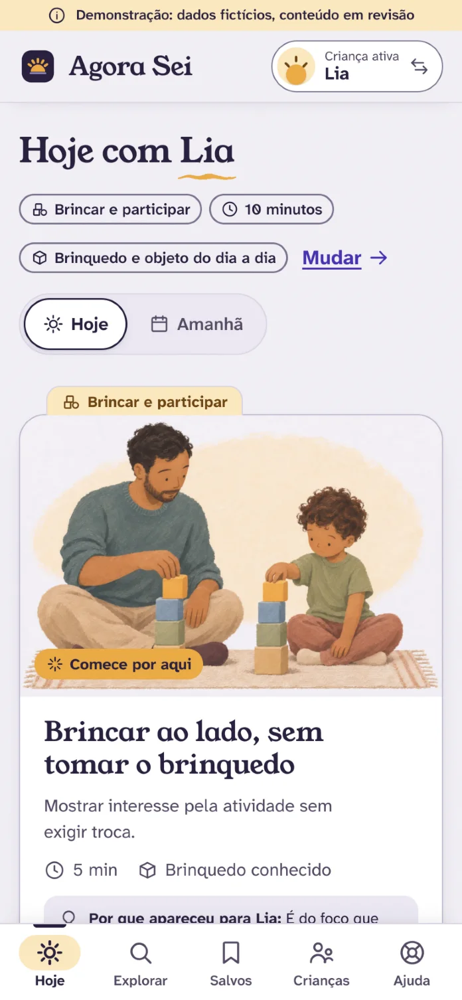
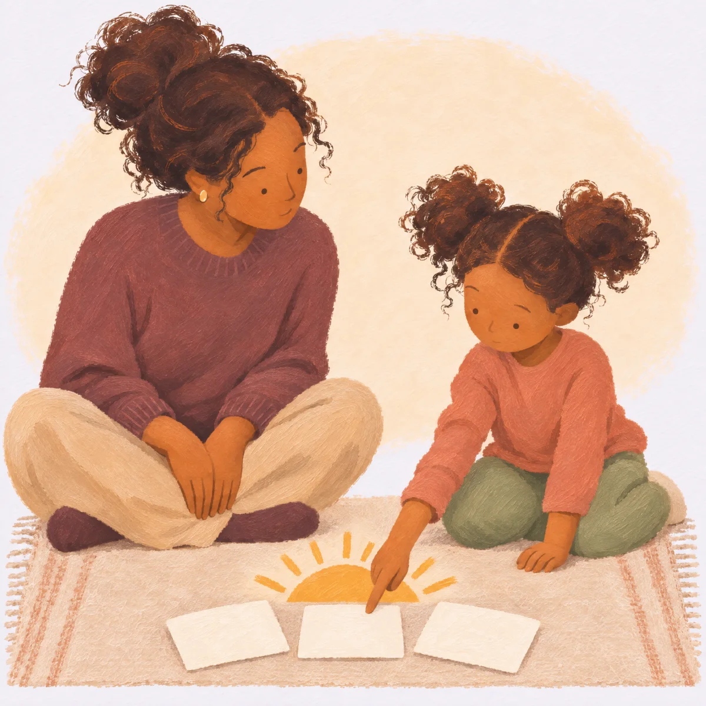
 Lia4 anos
Lia4 anos
10 minutosdisponíveis hoje
Frases curtascomo ela entende
Telas de referência do design. A prévia navegável pode apresentar diferenças.
Comece por uma sugestão possível para hoje. Consulte os passos, os cuidados e o que precisa ser confirmado antes de experimentar. Você também pode explorar outras situações da rotina.
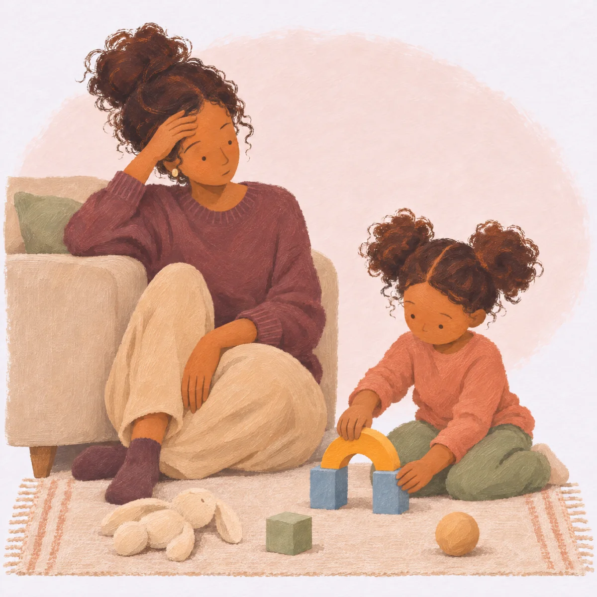
Brincar, lidar com momentos difíceis e ajudar a recuperar a calma. Estes são alguns exemplos de situações presentes no acervo.
Encontrar um jeito de participar da brincadeira que a criança escolheu.

Ver sugestões para anunciar o que vem depois e preparar uma mudança na rotina.

Ideias para organizar os momentos antes de dormir.

Ficar por perto e dar nome ao que aconteceu, sem cobrar explicação.
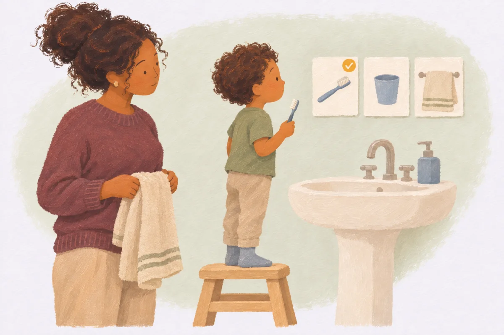
Dividir uma tarefa em partes e deixar a criança escolher por onde começar.

Combinar uma resposta parecida entre quem cuida, e rever se ela cabe.
Conte o contexto, veja as opções disponíveis e escolha por onde começar.
A fase da criança, o desafio de agora e como ela entende melhor. Cada criança tem o próprio perfil.
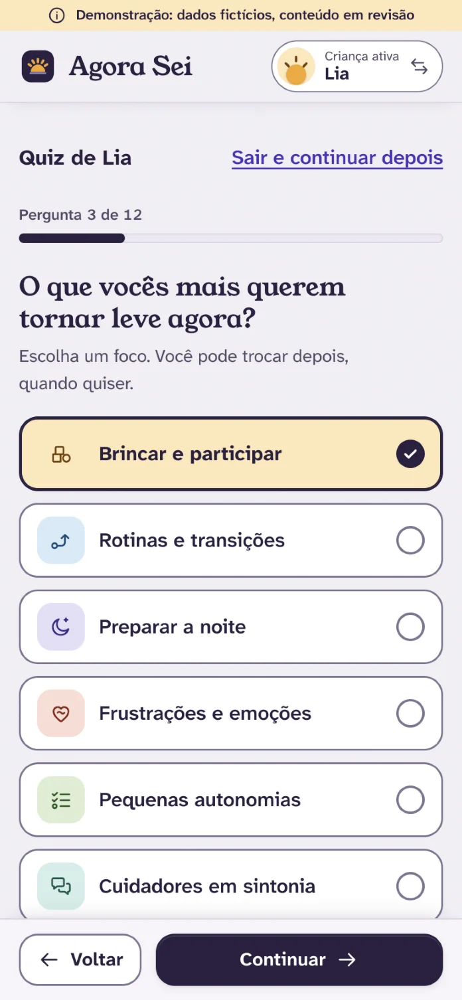
Tempo, o que há em casa e o que incomoda entram na conta. “Não sei” é uma resposta aceita.
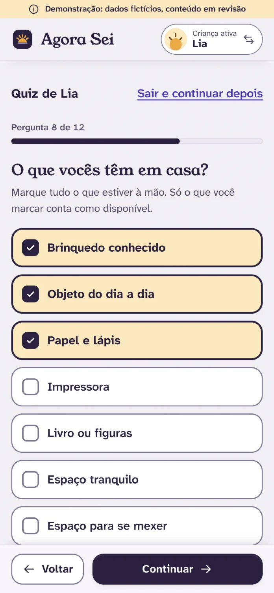
Veja as sugestões do quiz e explore situações do acervo. Quando faltam informações ou não há cobertura, o app informa o limite.
Salve uma ficha e registre como a tentativa coube na rotina. Você pode rever as respostas e retirar uma sugestão que trouxe desconforto.
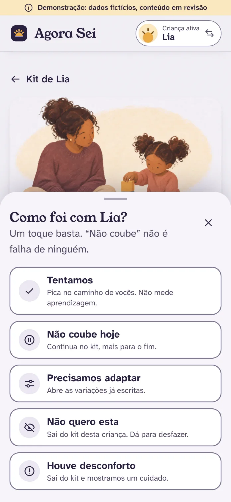
Esta demonstração ilustrativa mostra como tempo, materiais e necessidades informadas podem mudar uma seleção ou adaptação.
Lia é um perfil fictício. Esta cena ilustra a personalização; a seleção real depende de todas as respostas e dos requisitos de cada ficha.
E se hoje for diferente?
Três ideias cabem em 5 minutos e usam o brinquedo que vocês têm.

Uma escolha, sem interrogatório

Brincar ao lado, sem tomar o brinquedo
Cinco minutos seguindo a brincadeira
O kit muda. Entra a ideia que usa papel; as de brinquedo saem.

Um desenho que a criança conduz
Entrou porque usa papel.
As mesmas ideias, com um ajuste. Uma delas ganha uma adaptação.
Uma escolha, sem interrogatório
Brincar ao lado, sem tomar o brinquedo
Cinco minutos seguindo a brincadeira
Adaptação: volume baixo e poucos comentários.
Nada cabe em 2 minutos neste desafio. O app diz isso, em vez de empurrar outra coisa.
Sem sugestão para 2 minutos
Dá para ver outro desafio ou voltar quando houver 5 minutos.
Veja o que fazer, por que a orientação foi proposta, as adaptações e os cuidados. A apresentação varia conforme a ficha.
Antes de começar, confira materiais, requisitos e cuidados. Leia os passos completos e respeite as condições para interromper ou buscar outra ajuda.
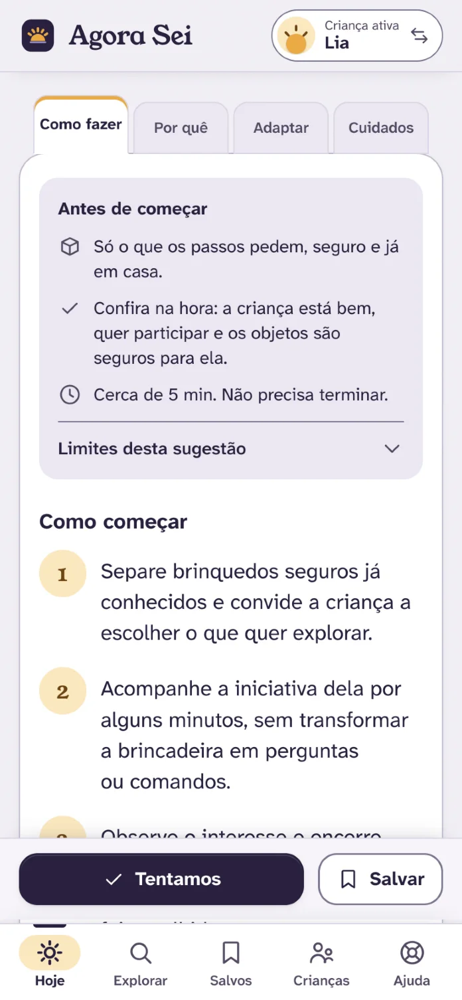
As respostas que pesaram na escolha, a ideia por trás do card, a fonte consultada e os limites dela.
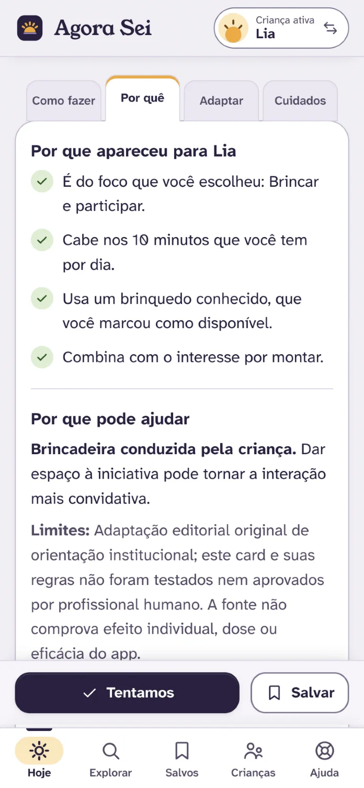
Consulte os ajustes previstos para aquela ficha. Outra imagem ou outra ordem não transforma a mesma orientação em uma técnica nova.
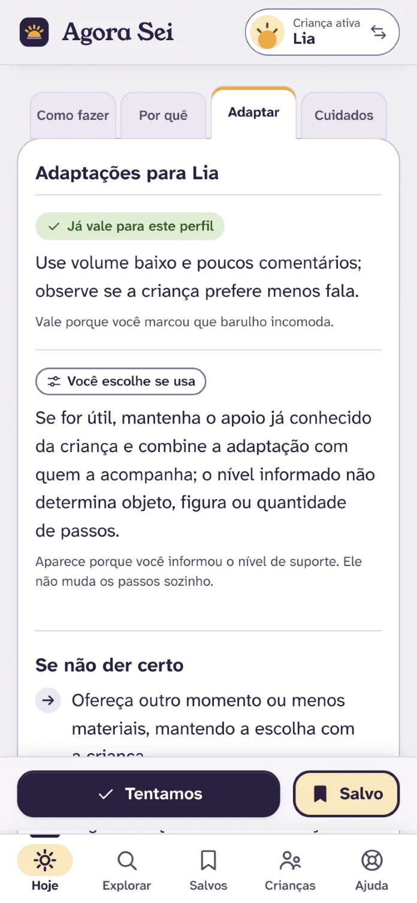
Cada card diz o que não fazer, quando interromper e em que situação vale buscar um profissional.
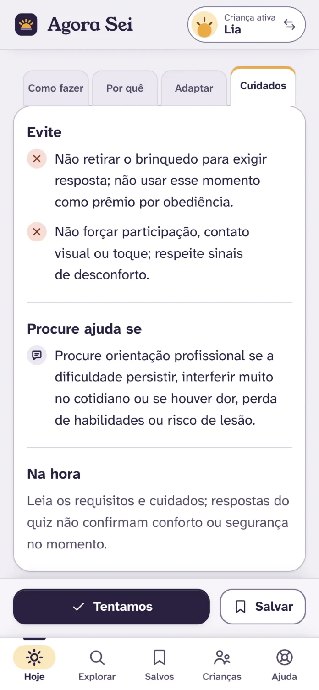
Ainda é um protótipo. Preferimos dizer com clareza o que ele é hoje.
108 fichas + 4 orientações de apoio
O acervo reúne 24 fichas iniciais, 84 novas fichas por situação e quatro orientações de apoio. Nesta prévia, o quiz seleciona entre as 24 iniciais; as novas ficam em “Escolher uma situação”. A cobertura varia por idade e requisitos. Referências e seus limites estão disponíveis; revisão profissional e testes com famílias permanecem pendentes.
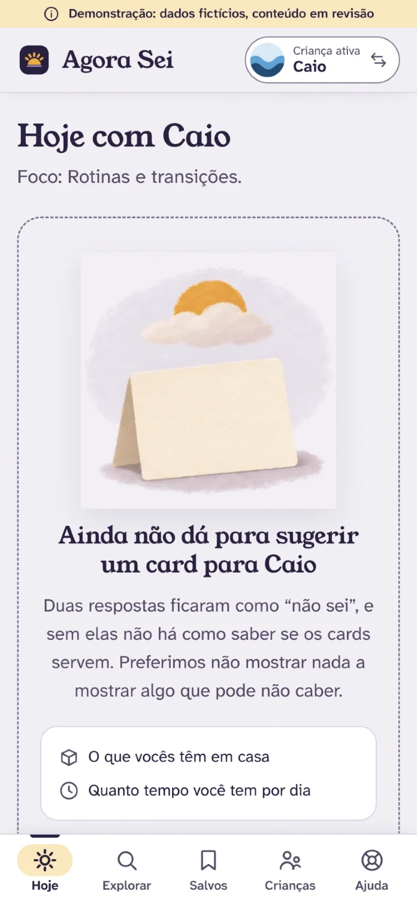
SERVIÇO DE ORIENTAÇÃO PARENTAL
Vamos chamar você no WhatsApp para entender melhor sua situação e recomendar um profissional que possa ajudar.
Quero ajuda profissionalEtapa demonstrativa: nenhum pedido é enviado nesta prévia. O atendimento profissional não está incluído no acesso ao app.
O pedido é uma escolha sua. Você confere o resumo e a autorização de contato antes de enviar, quando o serviço estiver disponível.
Não. É um web app: você abre pelo navegador, e as telas foram pensadas primeiro para o celular.
Ainda não. A cobertura desta versão é limitada e depende do card, da idade e do contexto informado. Quando não há uma sugestão que combine, o app avisa em vez de forçar uma atividade.
Não. As perguntas organizam informações para escolher entre as sugestões disponíveis. Não são uma avaliação clínica e não determinam diagnóstico nem nível de suporte.
O conteúdo desta demonstração está em revisão. Ter uma fonte consultada não significa que o card, a adaptação ou o aplicativo tenham sido aprovados por um profissional ou testados com famílias.
Sim. Cada criança tem um perfil separado, com as próprias respostas, sugestões e registros. As telas desta página são referências de design e usam Lia, uma criança fictícia.
Use apenas dados fictícios nesta prévia. Os perfis desta versão ficam no navegador. Ao escolher compartilhar, confira o conteúdo e o destino: a ficha e suas fontes podem permitir inferências sobre a criança. O pedido de ajuda profissional ainda não envia dados a uma equipe.
Esta é uma demonstração, sem compra e sem cobrança. Os planos e as condições de acesso ainda serão definidos.
Abra a prévia com dados fictícios e percorra a jornada, das boas-vindas às fichas e situações.
Ver a demonstração